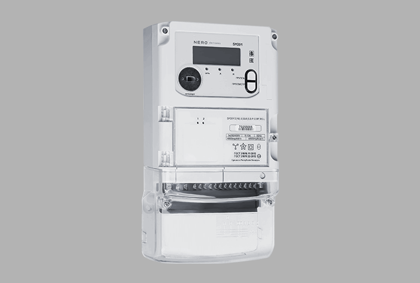
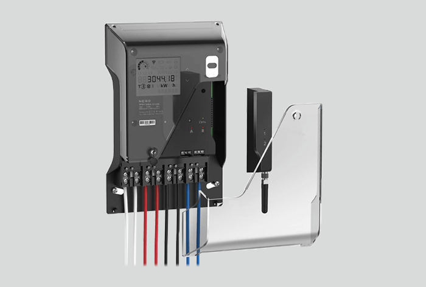
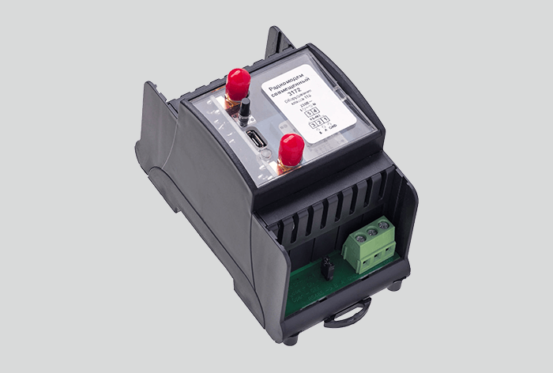
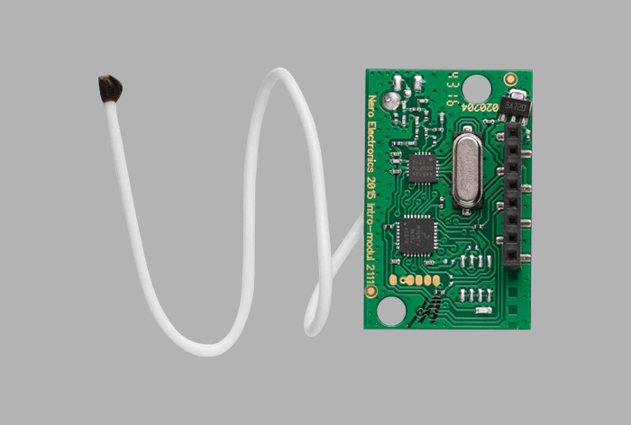
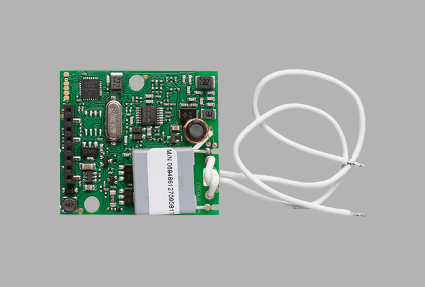
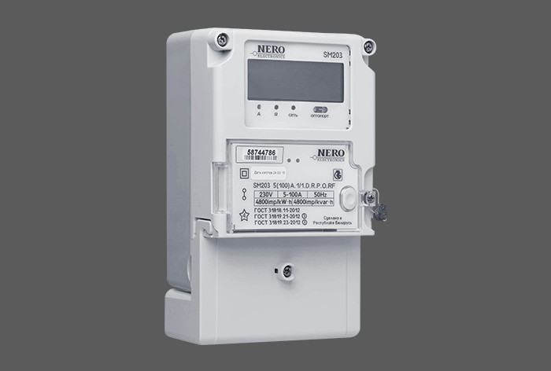
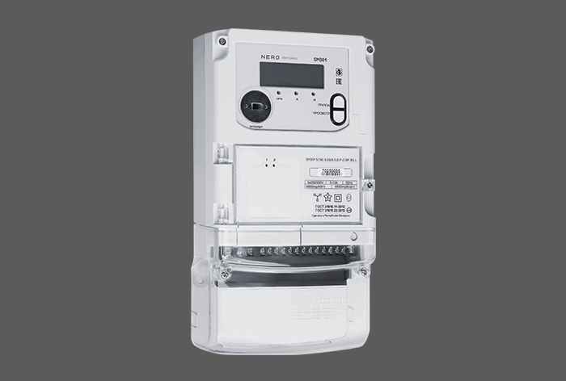
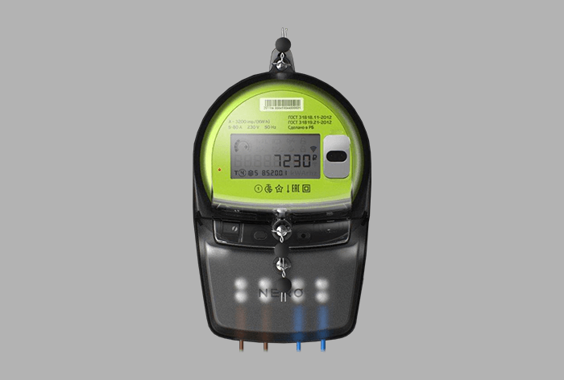
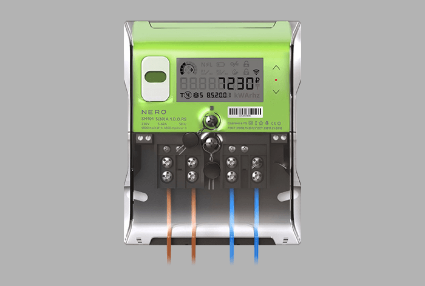
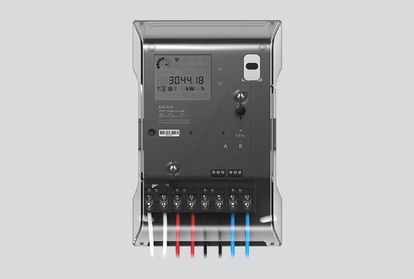

Портфолио разработок
Загрузка...

Трехфазный счетчик в стандартном корпусе со встроенным концентратором

Трехфазный счетчик в корпусе дизайна студии Артемия Лебедева со встроенным концентратором

Стационарный модем для приема / передачи данных с установленных счетчиков в подъезде многоквартирного дома

Радиомодем для установки в готовый счетчик, позволяющий сделать его умным

PLC модем для установки в готовый счетчик, позволяющий сделать его умным

Однофазный многофункциональный счетчик в стандартном корпусе

Трехфазный системный многофункциональный счетчик в стандартном корпусе

Однофазный многофункциональный счетчик с оптопортом в корпусе дизайна студии Артемия Лебедева. Повторяет все размеры и параметры стандартного индукционного счетчика.

Однофазный многофункциональный счетчик с оптопортом в корпусе дизайна студии Артемия Лебедева. По желанию заказчика может комплектоваться различными интерфейсами.

Трехфазный системный многофункциональный счетчик с оптопортом в корпусе дизайна студии Артемия Лебедева.